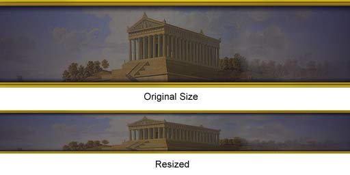
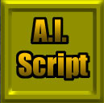
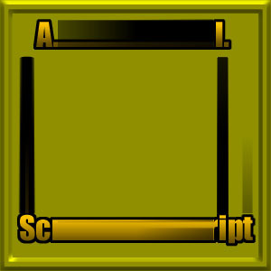
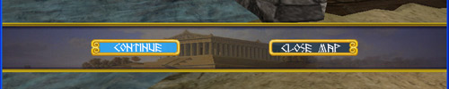

UDN
Search public documentation:
GUIStylesExample
Interested in the Unreal Engine?
Visit the Unreal Technology site.
Looking for jobs and company info?
Check out the Epic games site.
Questions about support via UDN?
Contact the UDN Staff
GUIStyles Example
Created by Chris Linder (DemiurgeStudios?) on 10-24-03 for the Unreal Runtime. Updated by Chris Linder (DemiurgeStudios?). Last updated by Michiel Hendriks.Related Documents
GuiReference, RuntimeExampleRestrictedMenu, LocalizationReferenceIntroduction
This example will go over how to create and use GUIStyles. To do so, we will redo the RuntimeExampleRestrictedMenu with new styles. This will include new fonts, new button images, and new UI elements. The look and feel of the interface will change but almost no code changes in the existing menus are needed. This document will discuss both the creation of the art needed for the styles and the code needed to support the art. This example is based on the Unreal Runtime but it can be used in any 2226 or higher build of the engine.How to Use GUIStyles
As explained in the GUIReference document, GUIStyles is a class that provides support for making different drawing styles for GUIComponents. The style for the component is set using the StyleName variable in defaultproperties where the GUIComponent is defined. For example:
Begin Object Class=GUIButton Name=LeaveMatchButton
WinWidth=0.2
WinHeight=0.05
WinLeft=0.6
WinTop=0.45
StyleName="RoundButton"
OnClick=InternalOnClick
End Object
StyleName is a string identifier for a GUIStyles subclass which matches the KeyName (or any of the AlternateKeyName s) of that class. Before styles can be used, they must be registered with the GUIController. This is done by setting the StyleNames array in defaultproperties. Given that previous subclasses of GUIController define there own styles, start indexing the StyleNames array at the one index greater than the superclass of the GUIController you are creating. For example StyleGUIController, which is the controller for this example, starts with index 17.
Creating a GUIFont
Before you can create GUIStyles you will need a GUIFont. To create a font in GUI you need to create a class that extends GUIFont. Special font classes are needed in GUI to accommodate different resolutions. The reason is that fonts in Unreal are based on images (they are stored in texture packs) and are not designed to be scaled. To account for this, different resolutions use different Unreal fonts. A GUIFont specifies a list of fonts and a corresponding list of resolutions that dictate when each font should be used. In general most GUIFonts use the same typeface at different sizes for the list of fonts. To create a set of Unreal fonts see the FontTutorial. In general, you should create 5 fonts with the same typeface. The first should be appropriate for resolutions widths less than 800 pixels, the next less than 1024, the next less than 1600, and the last for resolutions greater than 1600. If you find that 5 fonts are not enough control over text size, you can override the GetFont function in your GUIFont. You can override GetFont natively or in script. RTInterface.fntMidGameFont is an example of overriding GetFont in script. The class is shown below:
class fntMidGameFont extends GUIFont;
var int FontScreenWidth[7];
static function Font GetMidGameFont(int xRes)
{
local int i;
for(i=0; i<7; i++)
{
if ( default.FontScreenWidth[i] <= XRes )
return LoadFontStatic(i);
}
return LoadFontStatic(6);
}
// Same as
event Font GetFont(int XRes)
{
return GetMidGameFont(xRes);
}
defaultproperties
{
KeyName="MidGameFont"
FontArrayNames(0)="EM_Fonts_T.FontEurostile17"
FontArrayNames(1)="EM_Fonts_T.FontEurostile14"
FontArrayNames(2)="EM_Fonts_T.FontEurostile11"
FontArrayNames(3)="EM_Fonts_T.FontEurostile11"
FontArrayNames(4)="EM_Fonts_T.FontEurostile9"
FontArrayNames(5)="EM_Fonts_T.FontNeuzeit9"
FontArrayNames(6)="EM_Fonts_T.FontSmallText"
FontScreenWidth(0)=2048
FontScreenWidth(1)=1600
FontScreenWidth(2)=1280
FontScreenWidth(3)=1024
FontScreenWidth(4)=800
FontScreenWidth(5)=640
FontScreenWidth(6)=600
}
Fonts, like styles, need to be registered with the GUIController. This is done differently than styles because the FontStack is an array of GUIFont objects as opposed to an array of String names. To put fonts into this array, you need to create objects in default properties and then assign them like so:
defaultproperties
{
Begin Object Class=fntGreekFont Name=GUIGreekFont
bFixedSize=false
End Object
FontStack(6)=GUIGreekFont
Begin Object Class=fntGreekBigFont Name=GUIGreekBigFont
bFixedSize=false
End Object
FontStack(7)=GUIGreekBigFont
...
}
Like the StyleNames array, the FontStack must start indexing where the superclass left off.
Creating GUIStyles
To create your own GUIStyles refer to the GUIReference document. STY_LeftButton is shown below as an example. STY_LeftButton shows all the possible variables for GUIStyles being set; this is not necessary but just here for convenient reference.
class STY_LeftButton extends GUIStyles;
defaultproperties
{
KeyName="LeftButton"
Images(0)=Material'ExampleGUIStyles_T.Menu.Frame2Left_Blurry'
Images(1)=Material'ExampleGUIStyles_T.Menu.Frame2Left_Watched'
Images(2)=Material'ExampleGUIStyles_T.Menu.Frame2Left_Focused'
Images(3)=Material'ExampleGUIStyles_T.Menu.Frame2Left_Pressed'
Images(4)=Material'ExampleGUIStyles_T.Menu.Frame2Left_Disabled'
RStyles(0)=MSTY_Normal;
RStyles(1)=MSTY_Normal;
RStyles(2)=MSTY_Normal;
RStyles(3)=MSTY_Normal;
RStyles(4)=MSTY_Normal;
ImgStyle(0)=ISTY_Stretched
ImgStyle(1)=ISTY_Stretched
ImgStyle(2)=ISTY_Stretched
ImgStyle(3)=ISTY_Stretched
ImgStyle(4)=ISTY_Stretched
ImgColors(0)=(R=255,G=255,B=255,A=255)
ImgColors(1)=(R=255,G=255,B=255,A=255)
ImgColors(2)=(R=255,G=255,B=255,A=255)
ImgColors(3)=(R=255,G=255,B=255,A=255)
ImgColors(4)=(R=128,G=128,B=128,A=255)
FontColors(0)=(R=255,G=255,B=255,A=255)
FontColors(1)=(R=255,G=255,B=255,A=255)
FontColors(2)=(R=255,G=255,B=255,A=255)
FontColors(3)=(R=255,G=255,B=255,A=255)
FontColors(4)=(R=128,G=128,B=128,A=255)
FontNames(0)="GreekFont"
FontNames(1)="GreekFont"
FontNames(2)="GreekFont"
FontNames(3)="GreekFont"
FontNames(4)="GreekFont"
BorderOffsets(0)=14
BorderOffsets(1)=6
BorderOffsets(2)=5
BorderOffsets(3)=5
}
Note: See BorderOffsets Ignored below for problems with BorderOffsets.
Using GUIStyles and GUIComponents
Once you have your styles you can apply then to GUIComponents such as buttons and text fields with expected results. GUIComponents, and the styles associated with them can also be used in less intuitive ways. For example, the background for the mid game menu is in fact a button with a special style that scales the texture as opposed to stretching as is done for most buttons.GUIStyles Problems
No Animated Materials When Paused
When the game is paused, materials do not animate. When the mid game menu is up, the game is paused. Ergo, materials do not animate in the mid game menu. This means no fancy animated flashing materials for the buttons in the mid game menuList Box Issues (pre v3323)
In versions older than 3323 GUIListBoxs are not affected by the StyleName variable. This is because list boxes are drawn with the style of the GUIList that they contain. To set this style you have to do a bit of trickery in default properties. Below is an example of how I set the style of the map list in RestrictedMainMenu:
defaultproperties
{
Begin Object Class=GUIList Name=IAMain_MapListList
Name="MyList"
StyleName="Frame"
SelectedImage=Material'ExampleGUIStyles_T.Menu.SelectFrameFinal'
End Object
Begin Object Class=GUIListBox Name=IAMain_MapList
List=IAMain_MapListList
WinWidth=0.5
WinHeight=0.45
WinLeft=0.25
WinTop=0.30
bVisibleWhenEmpty=True
Hint="Select the map to play"
End Object
Controls(0)=GUIListBox'IAMain_MapList'
...
}
The other thing worth noting about GUIListBoxs is that they have the horizontal selection indicator that is not covered in the style for the list. Instead, there is an extra variable called SelectedImage which is the material that is drawn under the selected item in the list.
BorderOffsets Ignored
Note: As of Runtime-2226.19.03 (code drop 2226) there is a problem with BorderOffsets and GUIButtons; BorderOffsets are ignored when drawing the text of the button. Future builds should fix this problem. For now licenses should check UnProg for the fix.How to Create Textures for GUIStyles
Creating textures for GUIStyles is a fairly straightforward process, with a few particularies to keep in mind: Separate textures are created for the various buttons in their various behavior states (watched, blurry, etc) so that one button has five different versions. These textures will be used for buttons and frames whose dimensions will be defined by code. Therefore the textures you create will be most likely be resized. This is a great flexibility in the Unreal GUI system, but it also affects the way textures should be made. Unreal will use one of two methods to resize your textures. In the first, they are merely stretched, which can cause warping, just as changing the Image Size in Photoshop would:
A more complicated method of pixel repeating can be used. This is done by repeating pixels in the middle of the image to fill the sections between the corners if the stretch size is larger than the image. If the stretch size is smaller the corners are cropped in the middle and refitted together. This is well illustrated in the following images: This is the original 128 x 128 image:
This is the image resized to 100 x 100 pixels: This is the image resized to 300 x 300 pixels:
Note that the corners are unaffected while the central areas are. This means that your textures can have detail in the corners while the central parts should be relatively plain. This will inevitably result in some iterations with your textures, but it will be worth it in the end. For more information on this, check out the CanvasReference document. While these textures can be reused throughout your new GUIStyle, there are some limitations. Note that button textures can't easily be mirrored. In the case of this example, the mid game menu consists of two buttons (one for Continue and one for Close Map). These buttons are identical except they are mirrored horizontally. This required the creation of two different sets of button textures--one with the curlycues on the left and one on the right.
Installing the Example
Download the attached zip file and unzip it in your Runtime directory. Next you will need to alter your INI file settings to use the new menus and console. In UE2Runtime.ini, (or <your_game>.ini) in the[Engine.Engine] section, change the console and the GUIController as follows (note: you can comment out lines by starting them with a ';'):
Console=ExampleGUIStyles.RestrictedConsole GUIController=ExampleGUIStyles.StyleGUIControllerNext, in the
[Engine.GameEngine] section, change the menu classes to:
InitialMenuClass=ExampleGUIStyles.RestrictedMainMenu MainMenuClass=ExampleGUIStyles.RestrictedMainMenuNow in User.ini, in the
[Engine.PlayerController] section change the mid game menu to:
MidGameMenuClass=ExampleGUIStyles.RestrictedMidGameMenuAt this point you can launch the game and you will see the new menus. If you want to make changes to these menus, make sure you add "ExampleGUIStyles" to the EditPackages lists in UE2Runtime.ini (or <your_game>.ini).